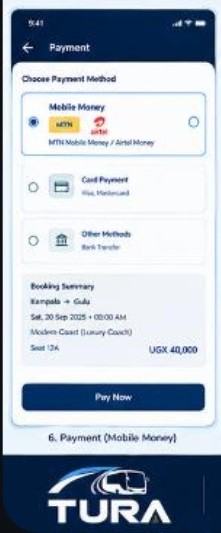

Kampala → GuluOn board
Tue, Sep 29 · 08:00 AM · Modern Coast · Seat 1AView ticketYOUR JOURNEYS
My tickets
Upcoming and past travel in one place.
Kampala → MbararaUpcoming
Fri, Oct 2 · 07:30 AM · St. Noah · Seat 3CView ticketSample journeys are for the screen preview only. The connected app shows tickets from your signed-in account.
